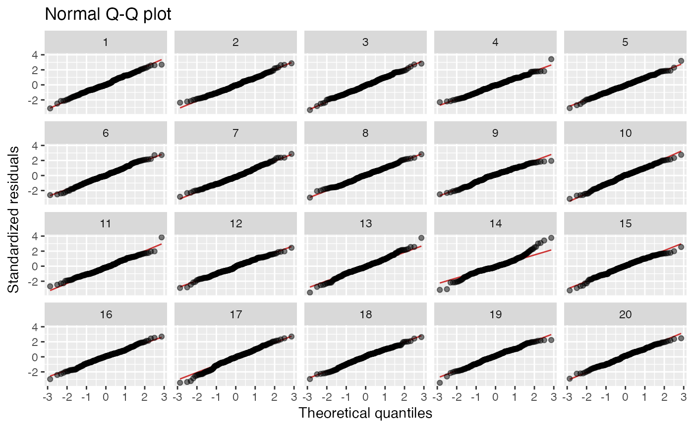
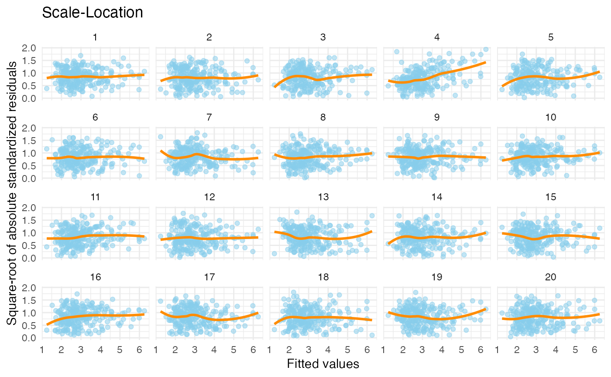

R/quick_plots.R
lineup_residuals.RdThis function is used to quickly create lineup version of the residual
plots created by plot.lm and ggfortify::autoplot.lm; see Details for
descriptions of these plots.
In the lineup protocol the plot of the real data is embedded amongst a field of
plots of data generated to be consistent with some null hypothesis.
If the observer can pick the real data as different from the others, this
lends weight to the statistical significance of the structure in the plot.
The protocol is described in Buja et al. (2009).
lineup_residuals(
model,
type = 1,
method = "rotate",
color_points = "black",
color_trends = "blue",
color_lines = "brown3",
alpha_points = 0.5,
...
)a model object fitted using lm.
type of plot: 1 = residuals vs fitted, 2 = normal Q-Q, 3 = scale-location, 4 = residuals vs leverage.
method for generating null residuals. Built in methods
'rotate', 'perm', 'pboot' and 'boot' are defined by resid_rotate,
resid_perm, resid_pboot and resid_boot
respectively. 'pboot' is always used for plots of type 2.
the color used for points in the plot. Can be a name or a color HEX code.
the color used for trend curves in the plot.
the color used for reference lines in the plot.
the alpha (opacity) used for points in the plot (between 0 and 1, where 1 is opaque).
other arguments passed onto method.
a ggplot
Four types of plots are available:
1. Residual vs fitted. Null hypothesis: variable is linear combination of predictors.
2. Normal Q-Q plot. Null hypothesis: errors are normal. Always uses
method = "pboot" to generate residuals under the null hypothesis.
3. Scale-location. Null hypothesis: errors are homoscedastic.
4. Residuals vs leverage. Used to identify points with high residuals and high leverage, which are likely to have a strong influence on the model fit.
19 null datasets are plotted together the the true data (randomly
positioned). If you pick the real data as being noticeably different, then
you have formally established that it is different to with p-value 0.05.
Run the decrypt message printed in the R Console to see which
plot represents the true data.
If the null hypothesis in the type 1 plot is violated, consider using a different model. If the null hypotheses in the type 2 or 3 plots are violated, consider using bootstrap p-values; see Section 8.1.5 of Thulin (2024) for details and recommendations.
Buja, Cook, Hofmann, Lawrence, Lee, Swayne, Wickham. (2009). Statistical inference for exploratory data analysis and model diagnostics, Phil. Trans. R. Soc. A, 367, 4361-4383.
Thulin, M. (2024) Modern Statistics with R. Boca Raton: CRC Press. ISBN 9781032512440. https://www.modernstatisticswithr.com/
null_lm
data(tips)
x <- lm(tip ~ total_bill, data = tips)
lineup_residuals(x, type = 1) # Residuals vs Fitted
#> decrypt("DruT c2V2 AR LeOAVAeR Jd")
lineup_residuals(x, type = 2, method = "pboot") # Normal Q-Q plot
#> decrypt("DruT c2V2 AR LeOAVAeR 4J")

lineup_residuals(x, type = 3) # Scale-Location
#> decrypt("DruT c2V2 AR LeOAVAeR 4z")
lineup_residuals(x, type = 4) # Residuals vs Leverage
#> decrypt("DruT c2V2 AR LeOAVAeR 4f")

# Style the plot using color settings and ggplot2 functions:
lineup_residuals(x, type = 3,
color_points = "skyblue",
color_trends = "darkorange") +
ggplot2::theme_minimal()
#> decrypt("DruT c2V2 AR LeOAVAeR 1G")